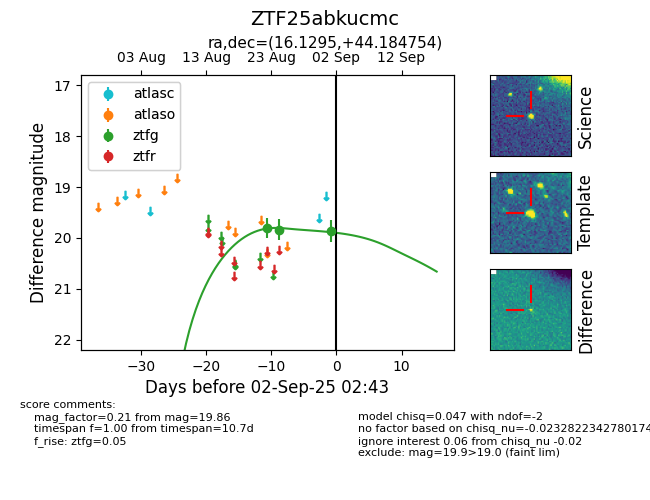

Target ZTF25abkucmc at 2025-08-26 11:55, see:
FINK: fink-portal.org/ZTF25abkucmc
Lasair: lasair-ztf.lsst.ac.uk/objects/ZTF25abkucmc
ALeRCE: alerce.online/object/ZTF25abkucmc
alt names
ZTF25abkucmc (ztf,fink)
coordinates:
equatorial (ra, dec) = (16.1295,+44.18475)
galactic (l, b) = (125.4058,-18.62415)
photometry
last ztfg=19.84
2 ztfg detections
